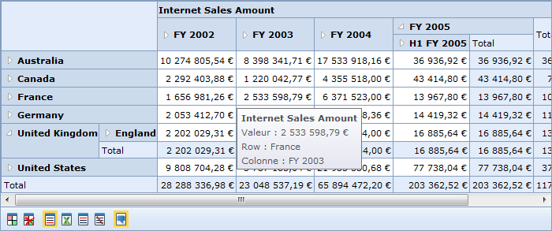

Localization is a key feature that targets its global usage. OlapDataManager can be set to the specific locale and the OlapGrid control can be rendered with the localized strings in the control based on the culture set on the OlapDataManager.
OLAP base allows overriding default format strings of an OLAP cube with the culture-based format string. This can be achieved by setting the OverrideDefaultFormatStrings property to true.
Use Case Scenarios
Localization helps users create an application that targets several locales.

Figure 34: Localized OlapGrid
Sample Link
A sample is available at the following location:
..\Syncfusion\EssentialStudio\<VersionNumber>\BI\Web\OlapGrid.Web\Samples\3.5\OlapGrid\Localization\Localization Demo
 Adding Localization to an
Application
Adding Localization to an
Application